Rambleon Birdsong: the season so far
Night Elf Hunter · Alliance · Level 8 to 30, 30 nights, 108h 57m played, September 21, 2026 to October 22, 2026.
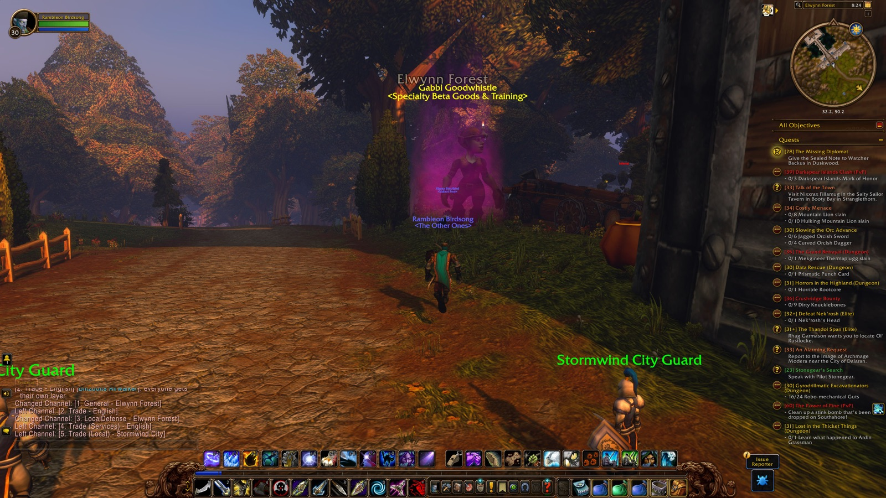
Entered Elwynn Forest
30Nights
205Quests
2881Enemies slain
102Deaths
35Places
64Loot
1Discoveries
8Notes
202Pictures
The road
Level 21 took the longest: 8h 49m. Level 16 went by in 2h 06m.
- Level 9 September 21, 2026, Lake Al'Ameth · Chapter 1
- Level 10 September 22, 2026, Wellspring River · Chapter 2
- Level 11 September 23, 2026, Dolanaar · Chapter 3
- Level 12 September 24, 2026, Ban'ethil Barrow Den · Chapter 4
- Level 13 September 25, 2026, The Oracle Glade · Chapter 5
- Level 14 September 25, 2026, Darkshore · Chapter 5
- Level 15 September 26, 2026, Ameth'Aran · Chapter 6
- Level 16 September 26, 2026, Bashal'Aran · Chapter 6
- Level 17 September 26, 2026, Twilight Vale · Chapter 6
- Level 18 September 27, 2026, The Shrine of Aessina · Chapter 7
- Level 19 September 27, 2026, Blackwolf River · Chapter 7
- Level 20 September 29, 2026, The Master's Glaive · Chapter 9
- Level 21 October 2, 2026, The Deadmines · Chapter 11
- Level 22 October 4, 2026, The Ruins of Stardust · Chapter 12
- Level 23 October 5, 2026, Menethil Harbor · Chapter 14
- Level 24 October 7, 2026, Wetlands · Chapter 16
- Level 25 October 8, 2026, Whelgar's Excavation Site · Chapter 17
- Level 26 October 10, 2026, Astranaar · Chapter 19
- Level 27 October 11, 2026, Stromgarde Keep · Chapter 20
- Level 28 October 13, 2026, Forest Song · Chapter 22
- Level 29 October 14, 2026, Sundown Marsh · Chapter 23
- Level 30 October 17, 2026, Astranaar · Chapter 25
Firsts
9 first times, in the order they came.
- Level 8First companionHazardelfChapter 1
- Level 8First note“alone at the lake slayin timberlings”Chapter 1
- Level 9First deathWellspring RiverChapter 2
- Level 12First achievementExplore TeldrassilChapter 5
- Level 19First dungeonBlackfathom DeepsChapter 8
- Level 22First rare itemBlackwater CutlassChapter 13
- Level 22First homeDeepwater TavernChapter 14
- Level 29First bossGhamoo-raChapter 25
- Level 30First discoveryThe Stonefield FarmChapter 30
Deaths
Died 102 times, 26 of them in Ashenvale.
Where
Ashenvale26
Wetlands24
Darkshore19
Stonetalon Mountains9
Hillsbrad Foothills6
Teldrassil4
Blackfathom Deeps3
Arathi Highlands2
What did it
the record doesn't say100
Infernal (elite)1
Plague Zombie1
Longest run of nights without one: 3.
Enemies
2,881 enemies slain; Dragonmaw Raider most often, 77 times.
Dragonmaw Raider77
Young Wetlands Crocolisk57
Wild Grell56
Highland Razormaw47
Cursed Sailor41
Where the time went
Lingered longest in Ashenvale: 22h 57m of 108h 57m.
Ashenvale22h 57m
Darkshore18h 09m
Wetlands16h 12m
Teldrassil9h 37m
Stormwind City8h 36m
Hillsbrad Foothills6h 26m
Stonetalon Mountains6h 06m
Westfall3h 57m
When you played
Most often around 9 PM; Mondays most of all.
midnight6 AMnoon6 PMmidnight
Company
Travelled with 154 people; Cassidy the longest, 59h 58m over 18 nights.
| Who | Together | Nights | First met |
|---|
| Cassidy (Druid) | 59h 58m | 18 | September 24, 2026 · Chapter 4 |
| Bird (Druid) | 1h 42m | 1 | September 23, 2026 · Chapter 3 |
| Karis (Druid) | 1h 11m | 1 | September 27, 2026 · Chapter 7 |
| Dire (Warrior) | 1h 10m | 1 | October 2, 2026 · Chapter 11 |
| Dyl (Druid) | 1h 04m | 1 | October 16, 2026 · Chapter 25 |
| Natcho (Hunter) | 1h 04m | 2 | October 6, 2026 · Chapter 15 |
| Boozebraid (Shaman) | 1h 04m | 1 | October 16, 2026 · Chapter 25 |
| Ia (Hunter) | 1h 02m | 1 | October 20, 2026 · Chapter 29 |
Chapters
30 chapters, oldest first.
- Chapter 1Alone at the LakeSeptember 21, 2026 · 1h 47m · 1 level
- Chapter 2The Oracle GladeSeptember 22, 2026 · 2h 21m · 1 level · 3 deaths
 Chapter 3The Calm of DarnassusSeptember 23, 2026 · 1h 51m · 1 level
Chapter 3The Calm of DarnassusSeptember 23, 2026 · 1h 51m · 1 level Chapter 4The Barrow DenSeptember 24, 2026 · 4h 48m · 2 levels · 1 death
Chapter 4The Barrow DenSeptember 24, 2026 · 4h 48m · 2 levels · 1 death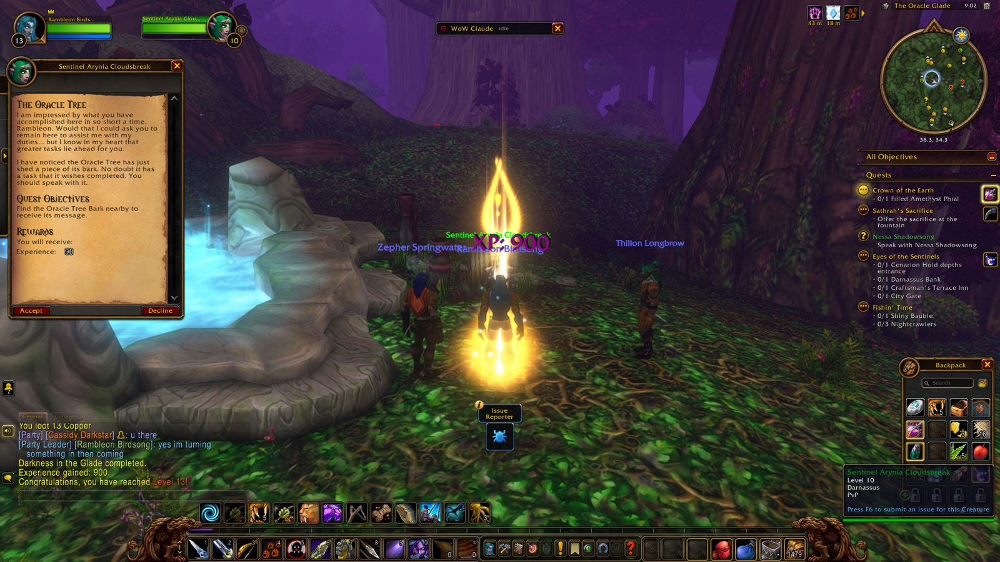
Chapter 5The Shores of DarkshoreSeptember 25, 2026 · 4h 38m · 2 levels · 9 deaths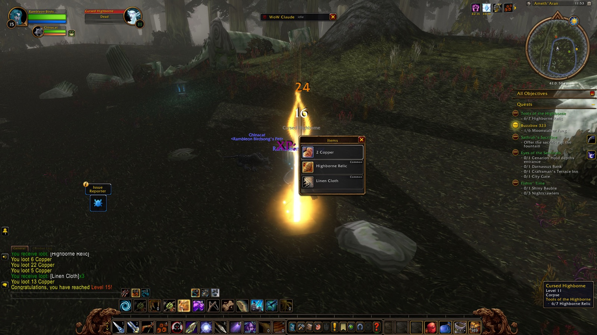
Chapter 6Across the Border to AshenvaleSeptember 26, 2026 · 7h 41m · 3 levels · 7 deaths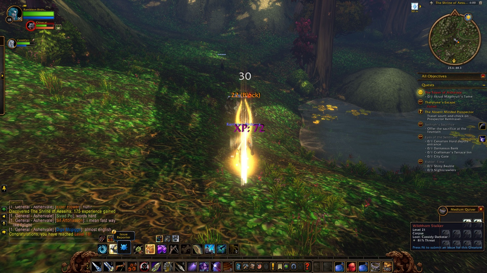
Chapter 7The Long Wash to StonetalonSeptember 27, 2026 · 8h 18m · 2 levels · 10 deaths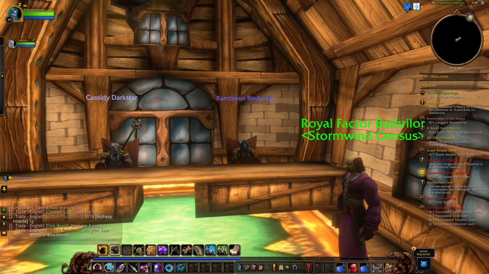
Chapter 8Patience with PridewingsSeptember 28, 2026 · 3h 34m · 3 deaths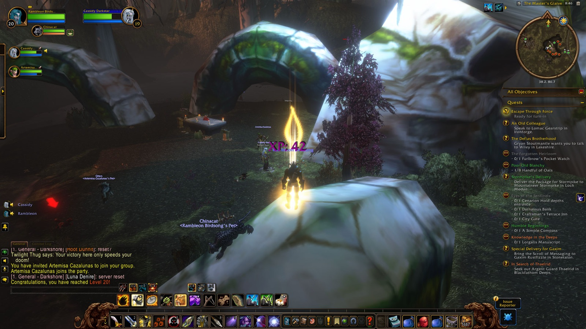
Chapter 9The First Train RideSeptember 29, 2026 · 1h 40m · 1 level · 1 death Chapter 10The Vale That Kept Calling Him BackOctober 1, 2026 · 3h 00m · 8 deaths
Chapter 10The Vale That Kept Calling Him BackOctober 1, 2026 · 3h 00m · 8 deaths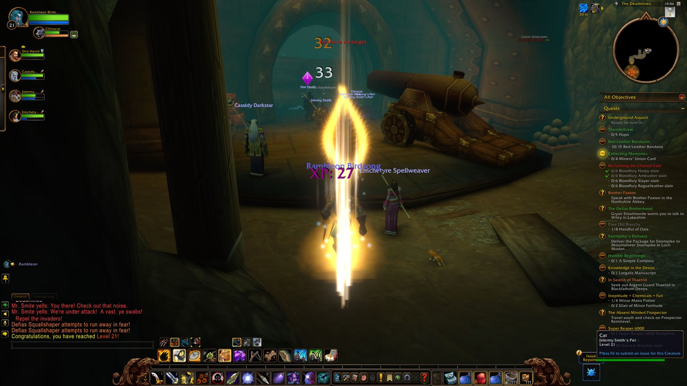
Chapter 11Into the DeadminesOctober 2, 2026 · 5h 35m · 1 level · 2 deaths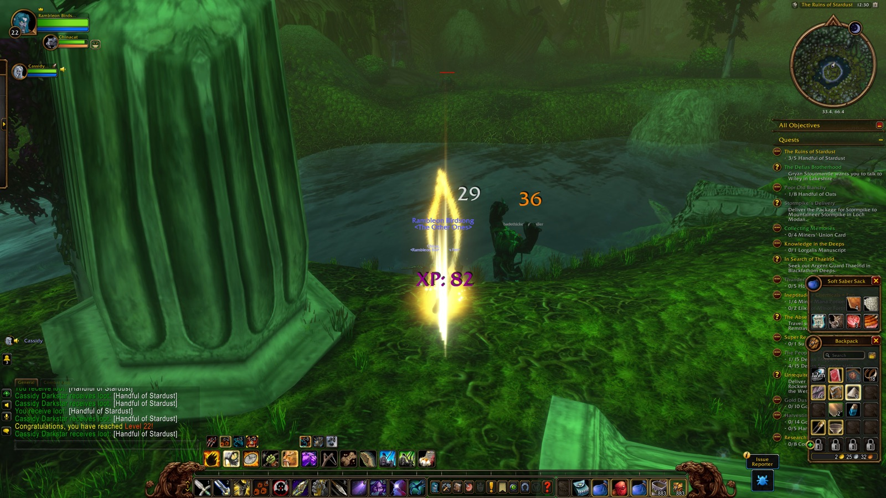
Chapter 12Stardust in the ValeOctober 3, 2026 · 6h 58m · 1 level · 4 deaths Chapter 13Scales and SolitudeOctober 4, 2026 · 2h 14m
Chapter 13Scales and SolitudeOctober 4, 2026 · 2h 14m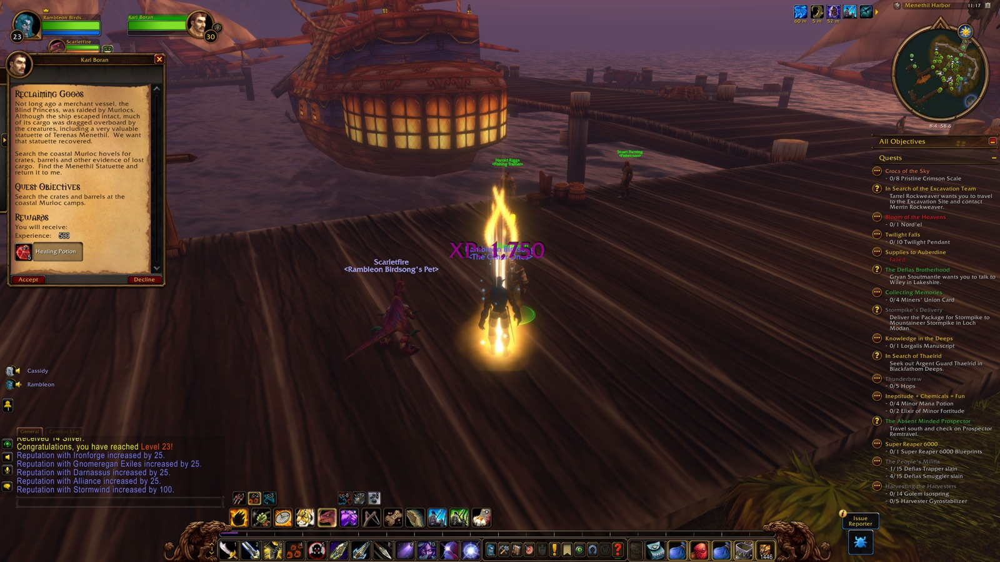
Chapter 14New Shores, Familiar CompanyOctober 5, 2026 · 3h 15m · 1 level · 1 death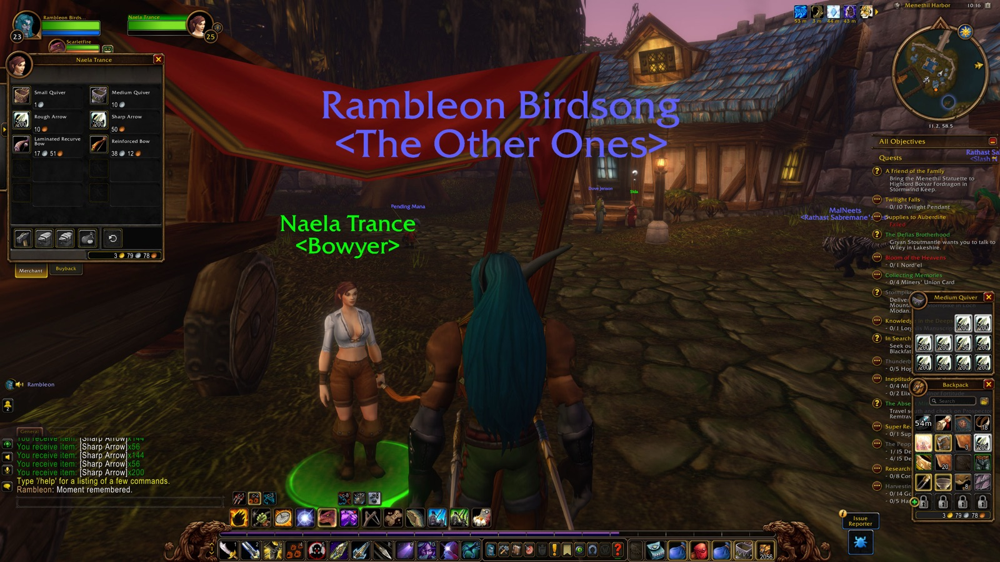
Chapter 15The Long Road to the CathedralOctober 6, 2026 · 3h 47m · 8 deaths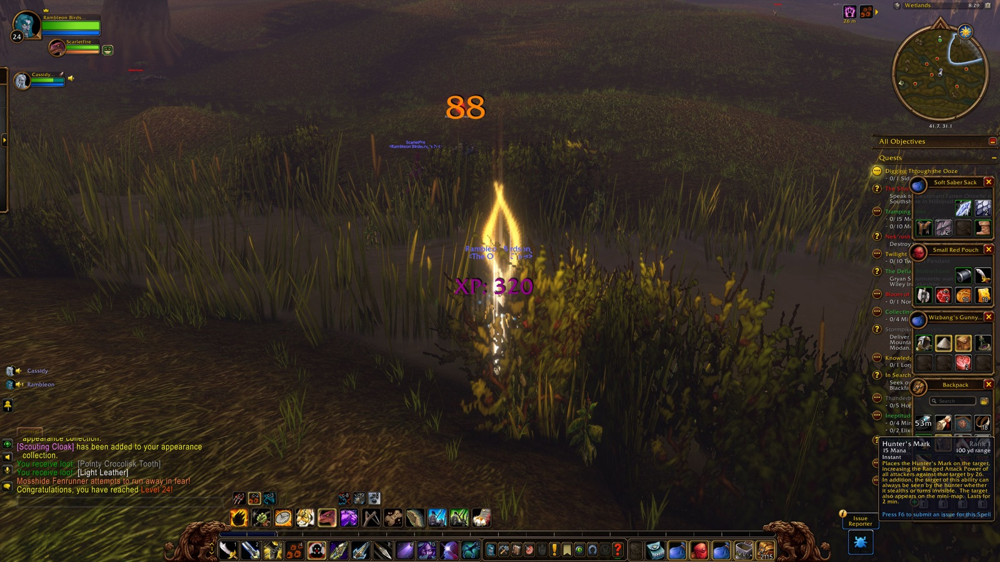
Chapter 16The Long Dig at Whelgar'sOctober 7, 2026 · 2h 55m · 1 level · 7 deaths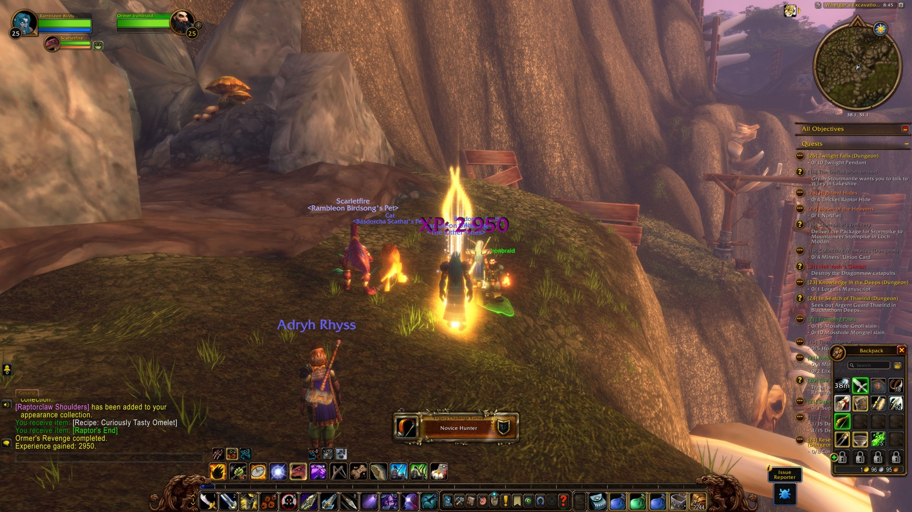
Chapter 17Across the Sea to HillsbradOctober 8, 2026 · 2h 30m · 1 level · 5 deaths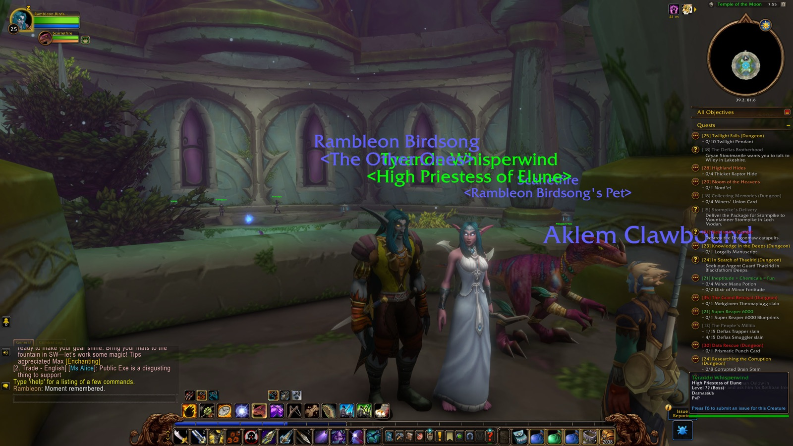
Chapter 18The Vale That Wouldn't Let GoOctober 9, 2026 · 3h 42m · 3 deaths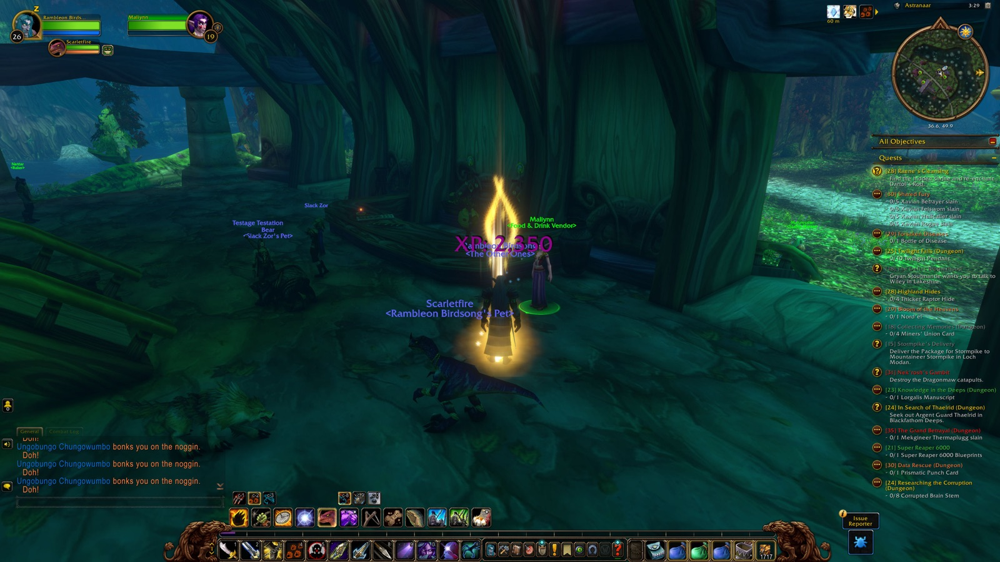
Chapter 19The Long CircuitOctober 10, 2026 · 7h 46m · 1 level · 10 deaths Chapter 20The Cursed Crew of the Lost FleetOctober 11, 2026 · 4h 25m · 1 level · 4 deaths
Chapter 20The Cursed Crew of the Lost FleetOctober 11, 2026 · 4h 25m · 1 level · 4 deaths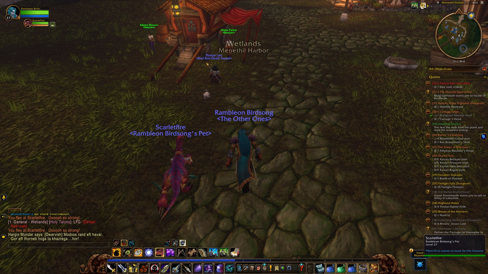
Chapter 21The Coast Road to SouthshoreOctober 12, 2026 · 1h 24m · 2 deaths Chapter 22The Curse LiftedOctober 13, 2026 · 4h 06m · 1 level · 4 deaths
Chapter 22The Curse LiftedOctober 13, 2026 · 4h 06m · 1 level · 4 deaths Chapter 23The Long Loop Back to SouthshoreOctober 14, 2026 · 3h 42m · 1 level · 3 deaths
Chapter 23The Long Loop Back to SouthshoreOctober 14, 2026 · 3h 42m · 1 level · 3 deaths Chapter 24New ShoresOctober 15, 2026 · 2h 10m
Chapter 24New ShoresOctober 15, 2026 · 2h 10m Chapter 25Deeper Than DarnassusOctober 16, 2026 · 5h 32m · 1 level · 3 deaths
Chapter 25Deeper Than DarnassusOctober 16, 2026 · 5h 32m · 1 level · 3 deaths Chapter 26The Long Road to StormwindOctober 17, 2026 · 2h 53m
Chapter 26The Long Road to StormwindOctober 17, 2026 · 2h 53m Chapter 27A Quiet ReturnOctober 18, 2026 · 1h 24m
Chapter 27A Quiet ReturnOctober 18, 2026 · 1h 24m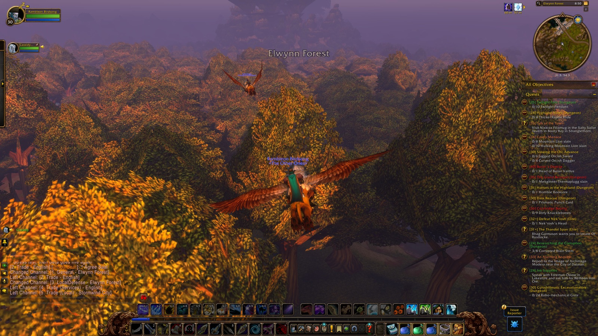
Chapter 28The CircuitOctober 19, 2026 · 1h 56m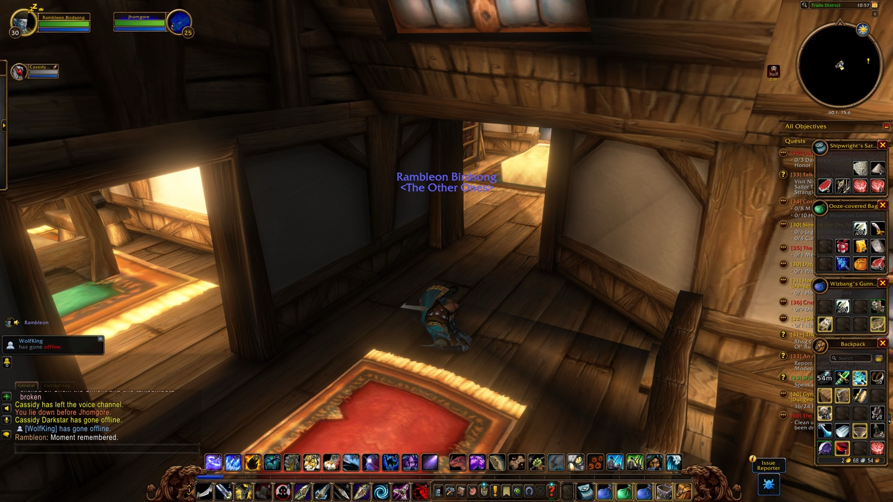
Chapter 29Gears and GhostsOctober 20, 2026 · 2h 31m · 2 deaths- Chapter 30The Stonefield FarmOctober 22, 2026 · 22m · 2 deaths
↑ Back to top